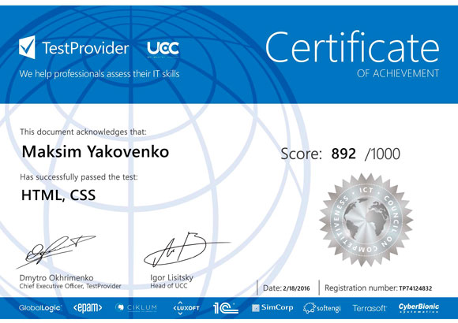
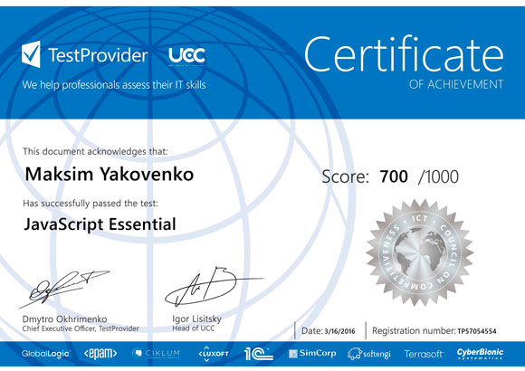
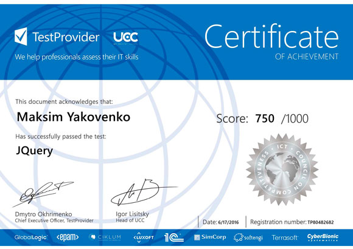

Professional skills
- 6+ month HTML, CSS, JavaScript, JQuery practice
- Bootstrap - Creating adaptive pages
- Git-repository
Education:



Experience:
09.2010 - till now
Company position: Accountant
Main responsibilities: Implementation of payments in the system client-bank. Control of AT / CT debt. Payment of wages.
Adaptive Landing Page (Cuda template)